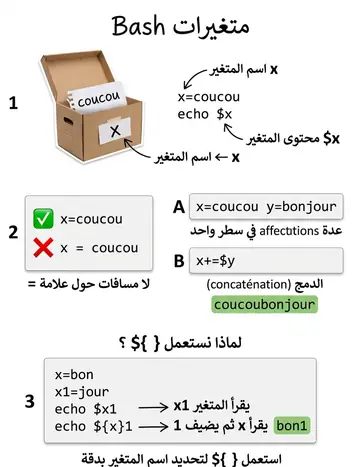

Paramètres & variables
المعاملات والمتغيرات
الشرح بالعربية
ثلاثة أنواع معاملات: متغيرات بأسماء، ثوابت، ومعاملات موضعية. التعيين بدون مسافات: x=5 (كتابة x = 5 خطأ). القراءة $x أو ${x}. bash غير نمطية: كل القيم نصوص. للدمج +=. declare -r أو readonly للثابت، وunset للحذف. الأقواس المفردة ' ' حرفية، والمزدوجة " " تفسّر المتغيرات والأوامر.
Illustrations de la leçon
1 planche · cliquez pour agrandir
Contenu de la leçon
Le cours en français, avec les termes techniques et les exemples.
Le shell distingue trois types de paramètres :
les variables, identifiées par un nom
Ex : a , PATH
les paramètres de position, identifiés par un numéro
Ex : 0 , 1 , 12
les paramètres spéciaux, identifiés par un caractère spécial
Ex : # , ? , $
LES TYPES DE PARAMETRES
Une variable est identifiée par un nom, Une suite de lettres, de chiffres ou de caractères espace souligné ne commençant pas par un chiffre. Les lettres majuscules et minuscules sont différenciées.
LES VARIABLES
Les variables peuvent être classées en trois groupes :
A- les variables utilisateur (ex : a, valeur)
B- les variables prédéfinies du shell (ex : PS1, PATH, REPLY, IFS, HOME)
C- les variables prédéfinies de commandes unix (ex : TERM).
En général, les noms des variables utilisateur sont en lettres minuscules tandis que les noms des variables prédéfinies (du shell ou de commandes unix) sont en majuscules.
LES VARIABLES
Les principales commandes de manipulation des variables sont
Echo
Export
read
Set, unset
Shift
LES VARIABLES
Nous appellerons variable simple toute variable définie par l’utilisateur pour ses propres besoins.
Désignation de la variable :
Pour désigner une variable, il suffit d’utiliser la syntaxe suivante: $variable
Si la variable doit être suivie d’une valeur autorisée la notation est alors la suivante: ${variable}nombre
Affichage d’une variable :
La commande: echo [-n] [texte] $variable permet d’afficher la valeur de la variable. On peut aussi l’intégrer dans du texte.
L’option –n permet d’éviter le passage à la ligne après l’affichage.
LES VARIABLES SIMPLES
Affectation directe :
Syntaxe :
nom=[valeur]
[ nom=[valeur] ... ] le symbole = et la valeur à affecter forment une seule chaîne de caractères.
Plusieurs affectations peuvent être présentes dans la même ligne de commande
Ex : $ x=coucou y=bonjour
=> la variable x contient la chaîne de caractères coucou
=> la variable y contient la chaîne bonjour
Ex :
$ echo x est $xx est coucou
TYPES D’AFFECTATION DES VARIABLES
le nom d’un paramètre « x » et la valeur de ce paramètre « $x » ne se désignent pas de la même manière.
Ex :
$ x=$x$y=> x : contenant, $x : contenu
$ echo $xcoucoubonjour
$